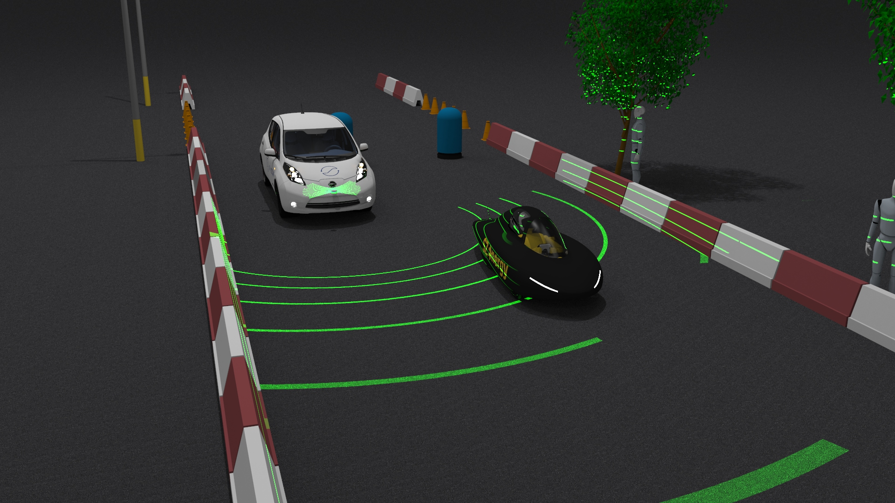
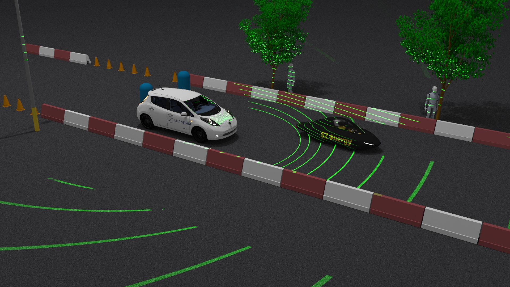
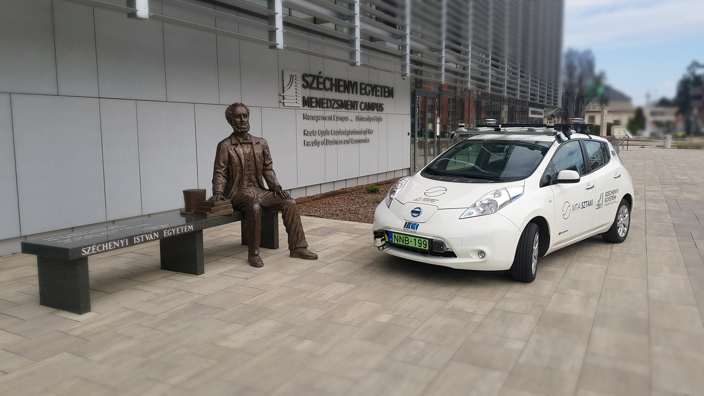
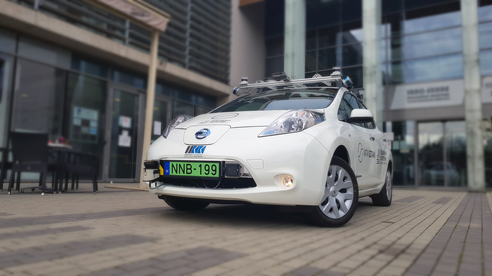

IMAGES







Our mission
One of our most researched topic is self-driving (a.k.a autonomous) vehicles. We believe that fully self-driving technology can lead to safe, easy and sustainable transportation. We are preparing for this new technology-to-come by studying and researching its fundamentals and exploring the possibilities it offers. This process helps us gain unique knowledge on the mixed field of mechatronics, robotics and artificial intelligence. Future transportation can be safe, easy and sustainable without compromises.
JKK_DATASET_01